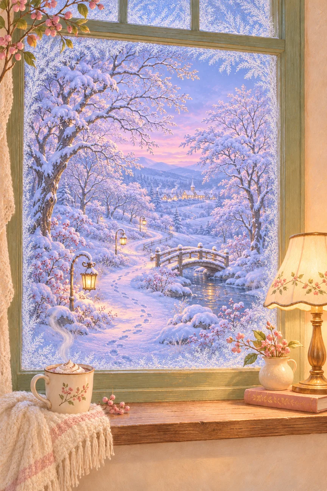
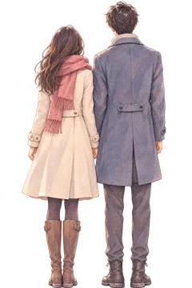

<!doctype html>
<html lang="zh-CN">
<meta charset="utf-8">
<meta name="viewport" content="width=device-width,initial-scale=1,viewport-fit=cover">
<meta name="theme-color" content="#dee5ef">
<title>给主人的一场初雪</title>
<link rel="stylesheet" href="style.css">
<style>#hint{font-size:16px!important;font-weight:700;color:#392c27!important;opacity:1!important;line-height:1.9;-webkit-text-stroke:.15px currentColor;text-shadow:0 1px 3px #fff,0 0 8px #fff,0 0 16px #fff}</style>
<style>.landscape{object-fit:fill}#mist{mask-image:linear-gradient(transparent 7%,#000 13%,#000 69%,transparent 76%)}h1{font-size:clamp(23px,3.3svh,32px);font-weight:600;color:#3f302b;-webkit-text-stroke:.2px currentColor}#copy{text-shadow:0 1px 4px #fff,0 0 16px #ffffffe6,0 0 30px #fff9}#hint,#eyebrow{opacity:.9;color:#493a32}.cinematic #cup,.cinematic #lamp{transform:scale(1.13);transform-origin:50% 48%}</style>
<main id="scene" style="--scene-ready:1">
  <style>#eyebrow{font-size:15px;font-weight:700;color:#3f302b;opacity:1;text-shadow:0 1px 3px white,0 0 9px white;-webkit-text-stroke:.15px currentColor}#mist{filter:blur(2px)}#couple{position:absolute;left:54%;top:49%;width:15%;height:12%;object-fit:contain;opacity:0;pointer-events:none;transition:opacity 4s ease 1s;transform-origin:50% 48%}.cinematic #couple{opacity:1}</style>
  
  
  <canvas id="snow" aria-hidden="true"></canvas>
  <div class="light" aria-hidden="true"></div><div class="steam" aria-hidden="true">﹏</div>
  <canvas id="mist" aria-label="用手指擦开窗上的雾气"></canvas>
  <section id="copy" aria-live="polite">
    <p id="eyebrow">一份冬日的小小心意</p>
    <h1 id="message">主人，有一场小小的初雪，等你开启。</h1>
    <p id="hint">轻轻擦开窗上的雾气</p>
    <button id="next">轻点开启 <span aria-hidden="true">→</span></button>
  </section>
  <button id="cup" class="hotspot" aria-label="碰一碰热饮" title="碰一碰热饮"></button>
  <button id="lamp" class="hotspot" aria-label="碰一碰窗灯" title="碰一碰窗灯"></button>
  <button id="skip" hidden>跳过动画 →</button>
  <button id="replay" hidden aria-label="重新看一遍">↺ 再看一遍</button>
  <div id="toast" role="status" hidden></div>
  <audio id="music" src="assets/winter-music-v2.mp3" preload="auto" loop playsinline></audio>
  <button id="music-toggle" aria-label="播放音乐" aria-pressed="false" title="播放或暂停音乐">♫</button>
</main>
<script src="app.js"></script>
<script src="music.js?v=2"></script>
<style>#music-toggle{position:absolute;top:max(16px,env(safe-area-inset-top));right:16px;z-index:10;width:44px;height:44px;border-radius:50%;border:1px solid #ffffffb0;background:#fff9;color:#503c36;font:22px Georgia,serif;box-shadow:0 2px 12px #503c3615}#music-toggle[aria-pressed="true"]{background:#fffce5}#music-toggle:focus-visible{outline:2px solid #78574b;outline-offset:3px}</style>
<style>#couple{left:54%;top:45.8%;width:10%;height:8%;transition:opacity 4s ease .6s;filter:saturate(.8)}.cinematic #couple{opacity:0}.cinematic.couple-visible #couple{opacity:1}</style>
<script>new MutationObserver(()=>{document.querySelector('#scene').classList.toggle('couple-visible',document.querySelector('#message').textContent.includes('懂你悲欢')||document.querySelector('#scene').classList.contains('couple-visible'))}).observe(document.querySelector('#message'),{childList:true});</script>
</html>
